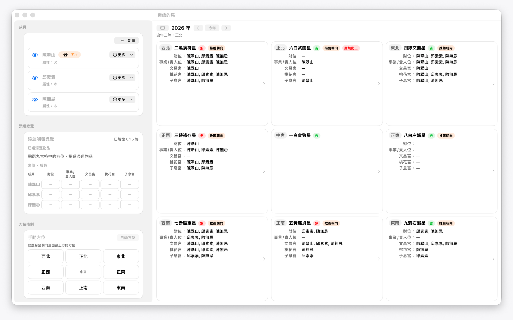
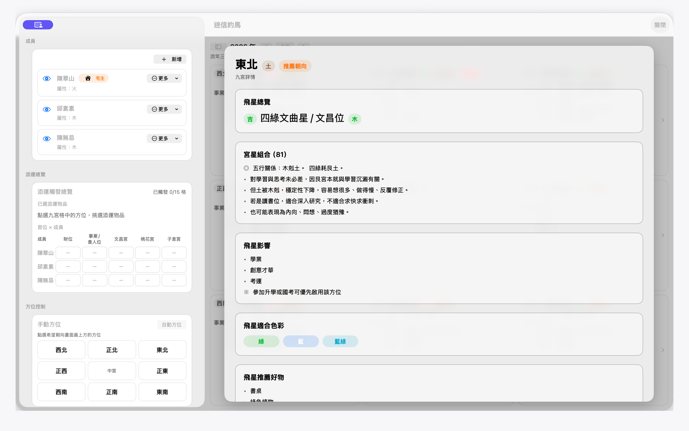

MAC 版
迷信的馬
查看九宮飛星、整理家人命盤，找到適合自己的添運方向。
看看 App 裡的畫面




系統需求：macOS 14 或以上
在 Mac 上使用迷信的馬
下載 Mac 版 查看發行說明下載連結會帶你到 GitHub 的最新 Release 頁面。
安裝方式
- 在 Release 頁面下載 Mac 版 ZIP 檔。
- 解壓縮後，將 SuperstitiousHorse.app 拖入「應用程式」資料夾。
- 從「應用程式」開啟 App，開始查看九宮飛星。